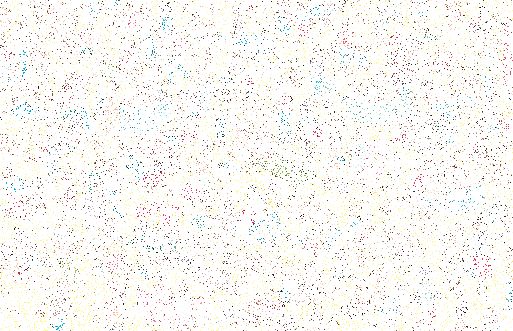
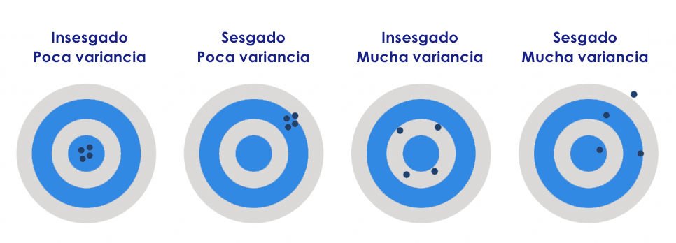

3. Inferencia estadística
Introducción
Las decisiones que tomamos en nuestra vida cotidiana se basan en información parcial. Nunca contamos con la verdad completa. Es por eso que salimos de casa con nuestro paraguas sin saber con certeza si vamos a usarlo. O compramos cuatro empanadas aunque quizás sólo comamos tres. O compramos entradas para el Lollapalooza antes de que salga el lineup.1
Lo importante es que incluso en ese contexto de incertidumbre podemos vivir plenamente, sin preocuparnos por tener la información total. Pero eso es sólo porque podemos sacarle provecho a la información parcial de la que sí disponemos. Tómsese como ejemplo la siguiente imagen, de la cual sólo conocemos el 10% de sus píxeles, estando el 90% restante en blanco. ¿Qué logran identificar? ¿De qué se trata la imagen?

Es muy difícil identificar algo. Como ya dijimos, tiene un 90% de “ruido”. Pero cuidado: no es el alto porcentaje de ruido lo que trae problemas, sino el hecho de que el 10% de información está muy disperso. Si concentrásemos ese 10% en la región adecuada de la imagen, tendríamos mucha más claridad sobre el asunto.
Esa es la meta de la inferencia estadística: sacarle tanto jugo como sea posible a la información parcial de la que disponemos, con el fin de recrear fielmente la “información total” que nos gustaría tener, para que nuestra toma de decisiones sea lo mejor posible.
Terminología
Una población es un conjunto de individuos o elementos, en un tiempo y espacio definidos, sobre los cuales nos interesaría conocer una caraterística.
Una muestra es un subconjunto de esa población, al cual tenemos acceso para obtener “información parcial”.
Una unidad es un elemento del (sub)conjunto: una persona, una institución, un vehículo, etcétera.
La variable en estudio (si bien podría haber más de una) es la característica de interés que se mide a cada unidad, y se utiliza en el cálculo de los valores poblacionales de interés.
La estadística inferencial es la rama de la Estadística que, a partir de la información empírica proporcionada por una muestra, intenta predecir el comportamiento de una población.
Dicha descripción estará siempre sujeta a un riesgo de cometer un cierto error por estar trabajando con los datos de una muestra y no de toda la población. Este error será medible o establecido en términos de probabilidades.
Un parámetro es un valor que describe o resume una característica de interés acerca de una población. Los parámetros son valores que nos interesan pero que desconocemos.
Un estadístico, en cambio, es una función de variables aleatorias, la cual no depende de valores desconocidos (parámetros).
Un estimador es un estadístico utilizado para representar un parámetro de interés en una población.
Todos los estimadores son estadísticos, pero no todos los estadísticos son estimadores. Sólo aquellos estadísticos que utilicemos para “representar” a nivel muestral el valor de un parámetro poblacional serán llamados estimadores.
Estimación puntual
Sean \(X_1, X_2, \cdots, X_n\) variables aleatorias de una población \(X\) cuya función de distribución conjunta es \[g(x_1, x_2, \cdots, x_n) = f(x_1) \times f(x_2) \times \cdots \times f(x_n) = \prod_{i=1}^n f(x_i)\] donde cada \(f(x_i)\) representa la función de densidad asociada a la variable \(X_i\), entonces decimos que \(X_1, X_2, \cdots, X_n\) es una muestra aleatoria de tamaño \(n\) de la población con densidad \(f(x)\). Una muestra aleatoria de tamaño \(n\) tiene variables aleatorias independientes e igualmente distribuidas (iid).
Una muestra aleatoria es siempre extraída de una población \(X\), la cual viene representada por una función de densidad \(f(x, \theta)\) donde \(\theta\) es un parámetro desconocido. Lo que nos interesa es estimar ese parámetro \(\theta\).
Un estimador puntual \(\hat{\theta}\) es una función de \(X_1, X_2, \cdots, X_n\) que estima al parámetro \(\theta\).
Dicho de otro modo, un estadístico es calculado a partir de información muestral para estimar un parámetro poblacional de interés.
Un estimador es aleatorio: puede tomar distintos valores dependiendo de cuáles elementos de la población sean seleccionados para formar parte de la muestra. Por lo tanto, puede definirse una distribución de probabilidad que defina la probabilidad de que el estimador tome cada uno de sus posibles valores.
En otras palabras, un estimador es una variable aleatoria.
Algunos de los estimadores más populares son:
Media muestral: \(\overline{X} = \frac{1}{n} \sum_{i=1}^n x_i\)
Variancia muestral: \(S^2 = \frac{1}{n-1} \sum_{i=1}^n (x_i - \overline{X})^2\)
Proporción muestral: \(\hat{p} = \frac{1}{n} \sum_{i=1}^n z_i\) (siendo \(z\) una variable binaria)
Propiedades de estimadores
Supóngase que ya tenemos una población de interés y un parámetro cuyo valor quisiéramos conocer: por ejemplo, la media. Teniendo una muestra, existen muchas formas de estimar la media poblacional. ¿Cuál de todos los posibles estimadores es mejor? Para compararlos entre ellos existen propiedades estadísticas de las que podemos valernos.
Insesgamiento
Sea \(X_1, X_2, \cdots, X_n\) una muestra aleatoria de tamaño \(n\) de una población \(X\), cuya distribución viene dada por \(f(x,\theta)\), con \(\theta\) un parámetro desconocido. Decimos que \(\hat{\theta}\) es un estimador insesgado de \(\theta\) si \[E(\hat{\theta}) = \theta\] para todos los posibles valores de \(\theta\). En caso contrario, decimos que \(\hat{\theta}\) es un estimador sesgado de \(\theta\).
El sesgo de un estimador puede calcularse como \[b(\hat{\theta}) = E(\hat{\theta}) - \theta\] de modo que:
\(b(\hat{\theta}) > 0 \implies \hat{\theta}\) sobreestima al parámetro \(\theta\).
\(b(\hat{\theta}) < 0 \implies \hat{\theta}\) subestima al parámetro \(\theta\).
\(b(\hat{\theta}) = 0 \implies \hat{\theta}\) es insesgado del parámetro \(\theta\).
Ejemplo 1
Sea \(X\) una v.a. con distribución exponencial. Demuestre que la media muestral es un estimador insesgado de la media poblacional \(\frac{1}{\lambda}\).
Solución: Si \(X \sim \text{exp}\), luego \(f(x) = \lambda e^{-\lambda x}\) y \(E(X) = \frac{1}{\lambda}\). Si obtenemos una muestra aleatoria de tamaño \(n\) a partir de la población y definimos \(\overline{X} = \frac{1}{n} \sum_{i=1}^n X_i\), luego:
\[E(\overline{X}) = E \left( \frac{1}{n} \sum_{i=1}^n X_i \right) \stackrel{(1)}{=} \frac{1}{n} \sum_{i=1}^n E(X_i) \stackrel{(2)}{=} \frac{1}{n} \sum_{i=1}^n \frac{1}{\lambda} = \frac{1}{n} \cdot n \cdot \frac{1}{\lambda} = \frac{1}{\lambda}\] donde (1) se cumple por propiedad de esperanza (de una combinación lineal) y (2) se cumple por ser una muestra aleatoria.
Consistencia
Se dice que un estimador \(\hat{\theta}\) es consistente de \(\theta\) si su distribución se concentra alrededor de valores cercanos al verdadero valor del parámetro \(\theta\), a medida que \(n\) crece.
En otras palabras, la probabilidad de que \(\hat{\theta}\) esté “lejos” del valor de \(\theta\) tiende a 0 cuando el tamaño de la muestra aumenta.
Existe una condición suficiente para probar si un estimador es consistente. \[b(\hat{\theta}) \stackrel{n\rightarrow\infty}{\longrightarrow} 0 \text{ y } V(\hat{\theta}) \stackrel{n\rightarrow\infty}{\longrightarrow} 0 \implies \hat{\theta} \text{ es consistente de } \theta\]
Ejemplo 2
Sea \(X\) una v.a. con distribución exponencial. Demuestre que la media muestral es un estimador consistente.
Solución: En primer lugar, ya se probó en el ejemplo anterior que el estimador “media muestral” es insesgado de \(\frac{1}{\lambda}\), es decir, su sesgo es nulo: \(b(\overline{X}) = 0\). En consecuencia, esto también significa que el sesgo tiende a cero cuando la muestra aumenta. Para evaluar la segunda condición:
\[V(\overline{X}) = V \left( \frac{1}{n} \sum_{i=1}^n X_i \right) \stackrel{(1)}{=} \frac{1}{n^2} \sum_{i=1}^n V(X_i) \stackrel{(2)}{=} \frac{1}{n^2} \sum_{i=1}^n \frac{1}{\lambda^2} =\] \[= \frac{1}{n^2} \cdot n \cdot \frac{1}{\lambda^2} = \frac{1}{n \cdot \lambda^2} \stackrel{n \to \infty}{\longrightarrow} 0\] donde (1) se cumple por propiedad de variancia (de una combinación lineal) y (2) se cumple por ser una muestra aleatoria.
Eficiencia
Decimos que un estimador puntual insesgado \(\hat{\theta}\) es un estimador eficiente del parámetro \(\theta\) si tiene la menor variancia entre todos los posibles estimadores insesgados del parámetro.
A diferencia del insesgamiento y la consistencia, la eficiencia es una propiedad relativa: no es algo que pueda definirse sobre cada estimador individualmente, sino que surge de compararlos entre ellos.
Ejemplo 3
Sea \(X_1, X_2, X_3\) una muestra aleatoria de tamaño \(n=3\) proveniente de una población con distribución \(N(\mu \,;\, \sigma^2)\), con \(\mu\) y \(\sigma^2\) desconocidos. Se proponen dos estimadores (insesgados) de \(\mu\):
\[\hat{\mu}_1 = \frac{1}{4} X_1 + \frac{1}{2} X_2 + \frac{1}{4} X_3\] \[\hat{\mu}_2 = \frac{1}{3} X_1 + \frac{1}{3} X_2 + \frac{1}{3} X_3\] ¿Cuál de ellos es más eficiente?
Solución: Calculando las variancias de cada uno:
\[V(\hat{\mu}_1) = \frac{1}{4^2} V(X_1) + \frac{1}{2^2} V(X_2) + \frac{1}{4^2} V(X_3) = \sigma^2 \left( \frac{1}{16} + \frac{1}{4} + \frac{1}{16} \right) = \frac{3 \sigma^2}{8}\] \[V(\hat{\mu}_2) = \frac{1}{3^2} V(X_1) + \frac{1}{3^2} V(X_2) + \frac{1}{3^2} V(X_3) = \frac{3}{3^2} \sigma^2 = \frac{3 \sigma^2}{9}\] En conclusión, \(\hat{\mu}_2\) es más eficiente que \(\hat{\mu}_1\).
En resumen, la propiedad de insesgamiento hace referencia al centro o posición central de la distribución muestral de nuestro estimador, mientras que las propiedades de consistencia y eficiencia refieren a su variabilidad.

Distribuciones muestrales
Como ya se discutió, los estadísticos son variables aleatorias: bajo una segunda muestra es probable que cambie su valor, respecto a la muestra original. Por lo tanto, al igual que como hicimos con variables aleatorias en la unidad anterior, podemos usar la distribución de probabilidad de estos estadísticos para calcular la probabilidad de que tomen ciertos valores.
Distribución de la media muestral (caso Normal)
Sea \(X_1, X_2, \cdots, X_n\) una muestra aleatoria de tamaño \(n\) extraída de una población \(N(\mu \,;\, \sigma^2)\). Sabemos que \(E(\overline{X}) = \mu\) y \(V(\overline{X}) = \frac{\sigma^2}{n}\). Entonces, la distribución de la media muestral es: \[\overline{X} \sim N \left( \mu \,;\, \frac{\sigma^2}{n} \right)\]
Es decir, la media muestral, cuando la muestra aleatoria proviene de una población Normal, también tiene distribución Normal, con parámetros \(\mu\) y \(\frac{\sigma^2}{n}\).
Ejemplo 4
Según el envase, el tubo de papas Pringles tiene un peso neto de 124 gramos. Un día nos agarra un antojo severo y compramos 5 tubos de papas. Pero cuando llegamos a nuestro hogar sentimos que los tubos son demasiado livianos. Desconfiados, pesamos cada uno en la balanza y nos da un peso promedio de 118 gramos. ¡Nos estafaron! ¿O no?
Llamamos a la atención al cliente de Pringles para reclamar y nos dicen que los tubos nunca tienen exactamente 124 gramos, sino que una máquina los llena siguiendo una distribución Normal con una media de 124 gramos y un desvío estándar de 8 gramos.
En base a lo que pesan nuestras papas, ¿cuál es la probabilidad de que la información brindada por la atención al cliente sea verdadera?
Solución: Lo primordial es definir qué se entiende por “probabilidad de información verdadera”. Recordemos que, al estar ante una v.a. continua, no podemos simplemente calcular \(P(\overline{X} = 118)\) porque dicha probabilidad es nula. Pero claramente debemos usar el 118 en algún lado. ¿Cómo?
Sea \(\overline{X}\) la variable “peso promedio de los tubos de papas en la muestra”. Bajo una presunción de que la información brindada por atención al cliente es correcta, tendríamos que \(X \sim N(\mu = 124 \,\;\, \sigma = 8)\). A su vez, nuestra sospecha es que, de no ser cierta la información provista, el veradero peso promedio será menor a 124 gramos (es decir, la empresa intentará sacar ventaja). Por lo tanto, podríamos preguntarnos: si suponemos que la información provista es cierta, ¿cuál sería la probabilidad de que el peso promedio sea lo que se observó o uno aún más incriminante? Entiéndase que, en este contexto, “más incriminante” implica un menor peso, porque eso reflejaría que es más probable que la información sea falsa.
En términos matemáticos: \[P(\text{Info cierta}) = P(\overline{X} \leq 118 \;|\; X \sim N(\mu = 124 \,;\, \sigma = 8))\]
Luego: \[X \sim N(\mu = 124 \,;\, \sigma = 8) \implies \overline{X} \sim N(\mu = 124 \,;\, \sigma = \tfrac{8}{\sqrt{5}})\]
En conclusión, queremos calcular \(P(\overline{X} \leq 118 \;|\; \overline{X} \sim N(\mu = 124 \,;\, \sigma = \tfrac{8}{\sqrt{5}}))\).
En el software estadístico R podemos calcular esta probabilidad mediante:
pnorm(118, mean = 124, sd = 8/sqrt(5)) = 0.04676626 \(\approx\) 4,67%
Distribución de la media muestral (caso no Normal)
Supóngase ahora que la muestra aleatoria \(X_1, X_2, \cdots, X_n\) es extraída de una población cuya distribución se desconoce: podría ser Normal como también podría no serlo. En este caso no tenemos una expresión “conocida” para la esperanza y variancia de la media muestral porque no conocemos la distribución de la variable \(X\). Sin embargo, existe un teorema que nos solucionará este problema.
Sea una población \(X\) con media \(\mu\) y variancia \(\sigma^2\). Sea \(\overline{X}\) la media muestral bajo una muestra aleatoria de tamaño \(n\), extraída de dicha población.
Luego, la distribución de \(\overline{X}\) se aprocima a una distribución Normal a medida que aumenta el tamaño muestral \(n\):
\[\overline{X} \stackrel{n \to \infty}{\sim} N \left( \mu \,;\, \frac{\sigma^2}{n} \right)\] Este teorema es uno de los resultados fundamentales de la Estadística. Nos dice que, si una muestra es lo suficientemente grande (\(n>30\)), entonces la media muestral, sin importar la variable original \(X\) (podría ser continua o incluso discreta), seguirá aproximadamente una distribución Normal.
El TCL es la razón por la cual la distribución Normal es tan popular.
Volviendo al caso no Normal, se tiene entonces una muestra \(X_1, X_2, \cdots, X_n\) proveniente de una población no necesariamente Normal. El TCL asegura que, bajo una muestra lo suficientemente grande, la media muestral sigue la siguiente distribución aproximada.
\[\overline{X} \stackrel{TCL}{\sim} N \left( \mu \,;\, \frac{\sigma^2}{n} \right)\]
Para reiterar, aún cuando la distribución de la población no sea Normal, un tamaño muestral lo suficientemente grande garantiza que la distribución de la media muestral sea Normal.
Ejemplo 5
Los sueldos en una cierta empresa multinacional conforman una variable con una alta asimetría: hay muchos empleados con sueldos relativamente bajos y unos pocos empleados (directores y gerentes) con sueldos muy elevados.
Si bien el sueldo de cada empleado es confidencial, es de público conocimiento que el sueldo promedio ronda los $1.800.000, con un desvío estándar de $1.000.000.
Si se obtuviera una muestra aleatoria de 100 empleados, ¿cuál sería la probabilidad de que el sueldo medio muestral sea superior a $2.000.000?
Solución: Siendo \(X\) la v.a. que representa el sueldo de los empleados de la empresa (en millones de pesos), se sabe que \(E(X) = \mu = 1,8\) y que \(\sqrt{V(X)} = \sigma = 1\). Sin embargo, no se conoce con exactitud la distribución de probabilidad de la variable. Más aún, difícilmente ésta sea Normal, dada la asimetría mencionada. De todos modos, por tener una muestra de gran tamaño, y por conocer la esperanza y variancia de la variable, el Teorema Central del Límite nos permite calcular la probabilidad deseada.
\[P(\overline{X} > 2) = 1 - P(\overline{X} \leq 2)\]
Por TCL: \[\overline{X} \stackrel{n \to \infty}{\sim} N \left(\mu = 1.8 \,;\, \sigma = \tfrac{1}{\sqrt{100}} \right)\]
Por lo tanto:
1 - pnorm(2, mean = 1.8, sd = 1/sqrt(100)) = 0.02275013 \(\approx\) 2,28%
Distribución de la media muestral (caso \(\sigma^2\) desconocido)
Los casos anteriores asumen que se conocen los valores de los parámetros. Supóngase ahora que la muestra aleatoria \(X_1, X_2, \cdots, X_n\) proviene de una población Normal, pero donde el valor del parámetro \(\sigma^2\) es deconocido (como suele ocurrir en la práctica).
En este caso, la estadística \(\overline{X}\) no tiene una distribución de probabilidad definida, pero sí podemos aplicarle una transformación para que la tenga.
\[T = \frac{\overline{X} - \mu}{S / \sqrt{n}} \sim t_{n-1}\]
siendo \(S\) el desvío estándar muestral y \(t\) la distribución t-Student.
Para muestras grandes (\(n>30\)) la distribución t-Student resulta casi idéntica a la distribución Normal, por lo que se pueden usar indistintamente. Este resultado, dado por el TCL, también aplica cuando \(X\) no es Normal.
O sea, bajo una población con variancia desconocida, si ésta es Normal entonces siempre podemos hallar una distribución de probabilidad; pero si no lo es (o no lo sabemos) entonces sólo podemos trabajar con muestras grandes.
Ejemplo 6
El último álbum de Taylor Swift, el cual contiene 31 canciones, tiene una duración promedio por canción de 238 segundos, con un desvío estándar de 43 segundos.
Si la verdadera duración promedio de todas sus canciones fuese de 250 segundos, ¿cuál sería la probabilidad de su álbum tuviera a lo sumo la duración promedio que se registró?
Solución: lo vemos en clase. El resultado es 0,0654.
Para pensar: ¿el último álbum cumpliría las condiciones de muestra aleatoria?
Distribución de la diferencia de medias
Supongamos ahora que tenemos dos muestras aleatorias extraídas de dos poblaciones \(X_1\) y \(X_2\) (no necesariamente Normales), de tamaños \(n_1\) y \(n_2\) respectivamente, e independientes entre sí.
Por lo demostrado anteriormente, sabemos que si \(n_1\) y \(n_2\) son suficientemente grandes (mayores a 30), la media de cada muestra tiene distribución Normal. En consecuencia, la distyribución de la diferencia de medias es:
\[\overline{X}_1 - \overline{X}_2 \stackrel{TCL}{\sim} N \left( \mu_1 - \mu_2 \,;\, \frac{\sigma^2_1}{n_1} + \frac{\sigma^2_2}{n_2} \right)\]
En el caso en que las poblaciones de las que se extrae cada una de las muestras aleatorias sean Normales, la distribución de la diferencia de medias será Normal sin importar los tamaños muestrales.
Ejemplo 7
El tiempo (en segundos) que tardan atletas argentinos federados en completar la carrera de 100 metros es una variable que sigue una distribución Normal, con media 11.5 y desvío estándar 1. Por otro lado, el tiempo para un grupo de corredores rosarinos aficionados también se distribuye Normalmente, con media 13 y desvío estándar 2.
Si se seleccionan al azar 3 personas de cada grupo, ¿cuál es la probabilidad de que el promedio de los aficionados sea menor que el de los atletas?
Solución: Siendo \(X_1\) la población de atletas federados y \(X_2\) la población de corredores aficionados, se quiere calcular \(P(\overline{X}_1 > \overline{X}_2) = P(\overline{X}_1 - \overline{X}_2 > 0) = 1 - P(\overline{X}_1 - \overline{X}_2 \leq 0)\).
Para los datos proporcionados, \(\mu_1-\mu_2 = -1.5\) y \(\tfrac{\sigma_1^2}{n_1} + \tfrac{\sigma_1^2}{n_1} = \tfrac{5}{3}\). Luego:
1 - pnorm(0, mean = -1.5, sd = sqrt(5/3)) = 0.1226391 \(\approx\) 12,26%
Distribución de la proporción muestral
Sea \(X_1, X_2, \cdots, X_n\) una muestra aleatoria extraída de una población \(X\) donde existen tan sólo dos resultados posibles: éxito y fracaso. Sabemos que una variable que mide el número de éxitos en la muestra aleatoria tiene distribución Binomial, con parámetros \(n\) y \(p\). Además sabemos que: \[E(\hat{p}) = p \qquad\qquad V(\hat{p}) = \frac{p(1-p)}{n}\]
Entonces, por TCL, la distribución de la proporción muestral será: \[\hat{p} \stackrel{TCL}{\sim} N \left( p \,;\, \frac{p(1-p)}{n} \right)\]
Ejemplo 8
Aproximadamente un cuarto de la población mundial con acceso a internet tiene una cuenta de Instagram. Si se extrae una muestra de 50 personas a partir de dicha población, ¿cuál es la probabilidad de que al menos 40 de ellas tengan una cuenta de Instagram?
Solución: Sea \(X\) la variable “posesión de una cuenta de Instagram” (sólo puede tomar como valores “sí” o “no”). Luego, \(p\) es la verdadera proporción de éxitos (en este caso, \(p = 0.25\)). A su vez, \(\hat{p}\) es la proporción muestral de éxitos. Se pretende calcular \(P(\hat{p} > 0.4) = 1 - P(\hat{p} \leq 0.4)\). Como la muestra extraída es grande, por TCL sabemos que \[\hat{p} \stackrel{TCL}{\sim} N \left( 0.25 \,;\, \frac{0.25 \times 0.75}{50} \right)\]
Por lo tanto:
1 - pnorm(0.4, mean = 0.25, sd = sqrt(0.25*0.75/50)) = 0.007152939 \(\approx\) 0,72%
No se los recomendamos.↩︎